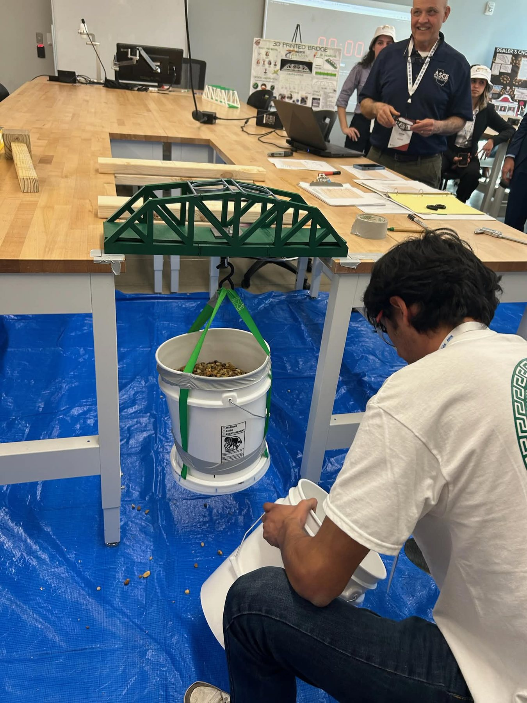
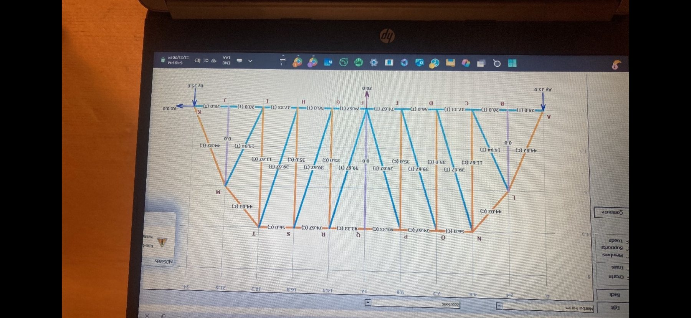
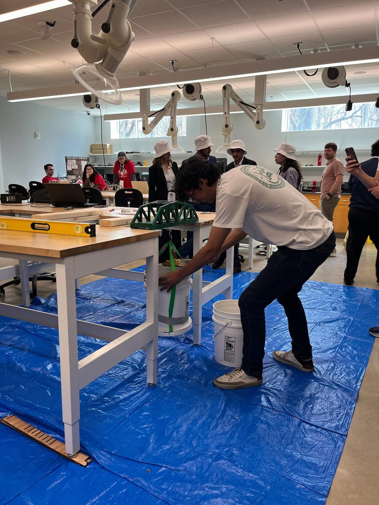
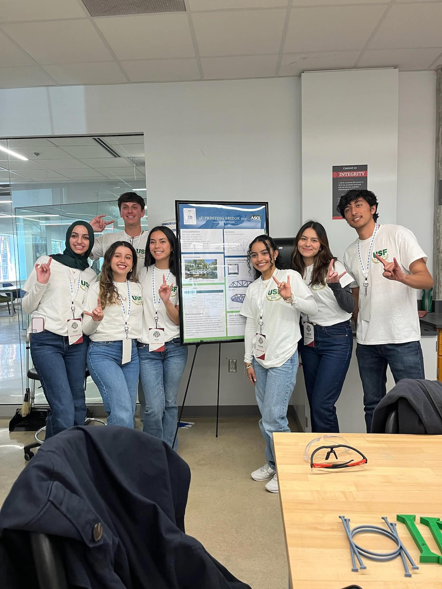
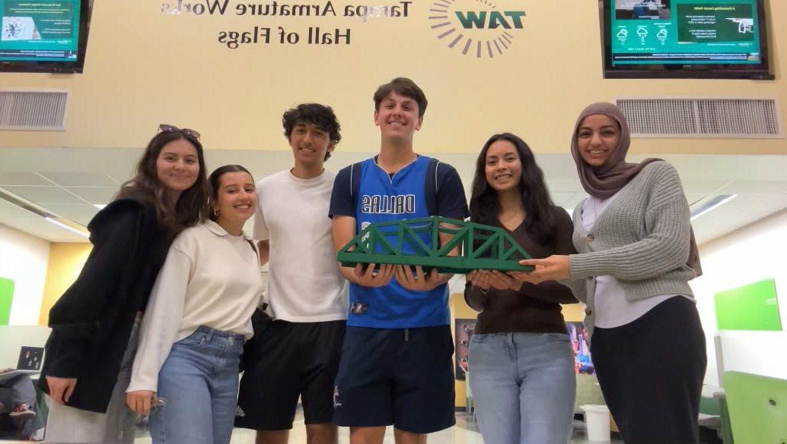
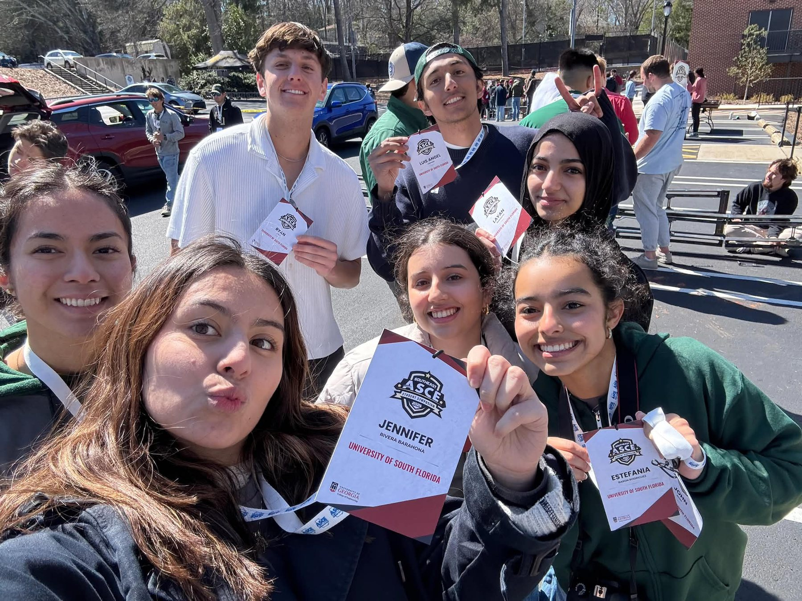

Designing to competition constraints
I joined the ASCE 3D Printing Competition during my first year of college, when I was still a civil engineering major. Our team designed the bridge in SOLIDWORKS around the competition requirements, then printed multiple versions and physically tested them before the event.
This was one of the first projects where I saw how CAD decisions affected a physical structure under load.
Load testing and prediction
Before competition, we used physical loading to understand the bridge response and refine the design. We also had to predict how the bridge would behave under the official loading sequence.


At competition, the bridge remained intact through the loading sequence and the measured response closely matched the team's prediction. The team received the event's prediction-accuracy award.
Technical presentation
Our deliverables were not limited to the bridge itself. We also prepared a poster and presented the design process, testing, and individual contributions to judges and other students.


